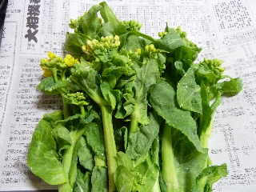
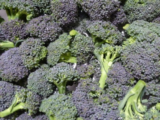
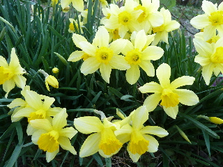
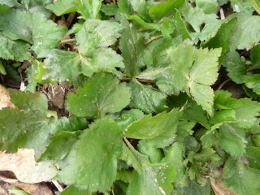
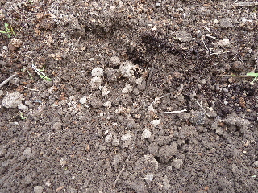
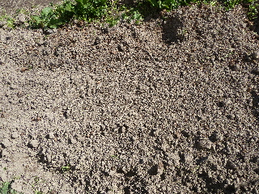

遊びで植物を育てよう
2015/03/28
白菜の花を食べました。
食べきれなかった白菜に花がつきました。

茎が太くて食べにくそうなんですが、
ゆでると柔らかくて、甘みがあって美味しいです。
【3月TOP】
【日記TOP】
【園芸TOP】
2015/03/28
ブロッコリー大量です。
暖かくなってきたので、植物の成長が早いです。

ブロッコリーが大量に採れました。
今日から沢山たべないといけない。
【3月TOP】
【日記TOP】
【園芸TOP】
2015/03/28
水仙は今が絶好調です。
我が家の水仙は今がピークです。

色々種類がありますが、全体的に今が一番状態がいいです。
【3月TOP】
【日記TOP】
【園芸TOP】
2015/03/22
長いもを掘りました。
掘ろうと思ったわけじゃないですが、
ちょっと邪魔だったので採りました。
そこそこ大きさがあるので食べれそうです。
【3月TOP】
【日記TOP】
【園芸TOP】
2015/03/15
三つ葉が出てました。
まだ小さくて採りませんでした。

三つ葉が生えました。
もうちょっと青々したのが長くなったら食べようと思います。
【3月TOP】
【日記TOP】
【園芸TOP】
2015/03/15
ジャガイモを植えました。
畑にじゃがいもを植えました。

買った種イモじゃなくて、去年採れたメークインの芽が出たものです。
これでたぶん大丈夫。普通に育つと思います。
薬を使って育てると駄目みたいですけど。
【3月TOP】
【日記TOP】
【園芸TOP】
2015/03/08
畑のあちこちを耕しています。
次の野菜の準備をしています。

まだ寒いのでこのままですけど。
【3月TOP】
【日記TOP】
【園芸TOP】
過去の日記
【2024年4月の日記】
【2023年3月の日記】
【2022年3月の日記】
【2021年3月の日記】
【2020年3月の日記】
【2019年3月の日記】
【2018年3月の日記】
【2017年3月の日記】
【2016年3月の日記】
【2015年3月の日記】
【2014年3月の日記】
【2013年3月の日記】
【3月TOP】
【日記TOP】
【園芸TOP】
畑仕事じゃないよ。
【おいしいものを食べよう。】【たくさん寝よう。】
【ソロ活をしよう!】【季節感のあることをしよう。】【動画視聴はほどほどに。】【当サイトの全てのコンテンツは無断転載禁止です。】